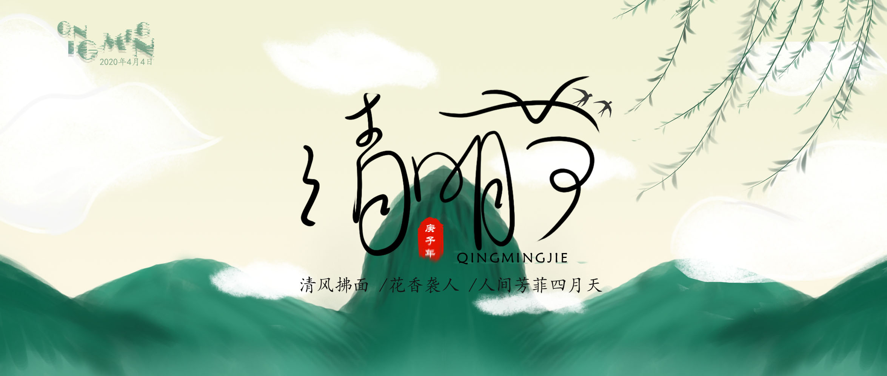
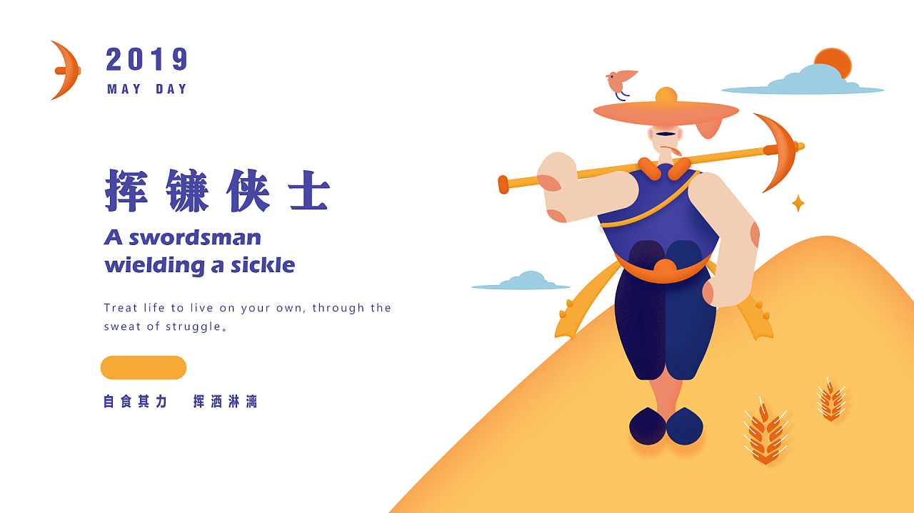
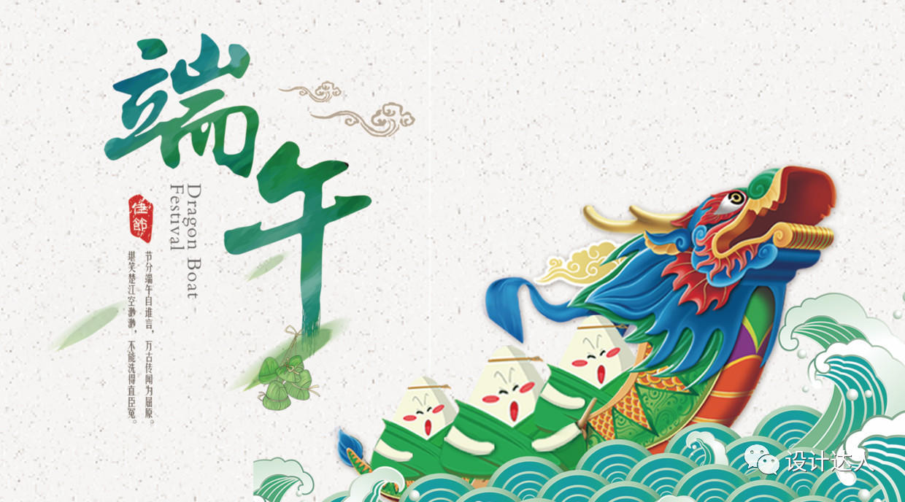

2020 年第二季度总结
这里记录下第二季度自己的一些想法，为了日后翻阅方便！
- 四月
- 读书的乐趣
- 做有趣的事情
- 身体是革命的本钱
- 希望世界变美好
- 五月
- 种田感悟
- 熬夜感悟
- 短期计划的重要性
- 为什么需要结婚
- 六月
- 我是唱作人 2
- 音乐本质
- 北京疫情
- 不同的声音
四月
不管身在何处，我们都不要迷失自己！
那一天我二十一岁，在我一生的黄金时代，我有好多奢望。我想爱，想吃，还想在一瞬间变成天上半明半暗的云，后来我才知道，生活就是个缓慢受锤的过程，人一天天老下去，奢望也一天天消逝，最后变得像挨了锤的牛一样。可是我过二十一岁生日时没有预见到这一点。我觉得自己会永远生猛下去，什么也锤不了我。

一 读书的乐趣
有些事情需要思考，有些事情需要记住，有些事情需要进步！
在整个四月的所有工作日，我们公司还是采用远程办公的方式。也正是因为这个缘故，所以也让我思考到了自己是否适合远程工作的这种方式，以及如何更好地利用工作之外的时间干些其他有趣的事情。比如，读书就是一个非常好的事情。
每天下班之后，吃了饭，下楼遛了弯，然后不想打开电脑的时候，自己就会拿起 Kindle 看看书。我将我的书店分为，本月书单、工作图书和文件著作三个目录。顾名思义，工作图书里面就是一些关于 Linux、Python、算法、密码学之类的 IT 相关图书，文学著作里面就是关于文学、社会、哲学相关的书籍，而本月书单就是这个月自己需要看完的书籍。我并没有给自己定量，比如这个月需要看多少书，需要在每天固定的那个时间段看，也没有规定具体要看哪些书。就是利用自己闲暇的时候，想看什么看点什么，时间也无需固定。
结果一个月的时间，发现自己还是能够看不少书籍的，而且还发现看书真的比想象起来更加有趣。比如一本来发现这本书可能会需要五天或者一周的时间才能看完，但是一不留神结果两天就看完了。还比如，书中很多话语能够让自己更加深刻的思考，思考什么时候，工作也好，生活也罢。
让我更好的一点就是，自己玩手机的时间越来越少了。只要有时间，第一个想到的就是去看看书，之前的那本书读到哪里了；之前谁谁谁说的那些话好像还不是很明白，再去看看，思考思考；怎么才能更好地解释 DES 算法的加密原理呢？让人更加容易理解？
但是这个过程并不是一蹴而就的，是一个比较困难的过程，就类似于番茄工作法一样，需要坚持 20-30 天以上才会有作用的。但是很多时候，我们只会坚持 5-7 天左右，很少能够将一个好习惯坚持那么久的，虽然我们都知道这样是好的。
二 做有趣的事情
有些事情需要思考，有些事情需要记住，有些事情需要进步！
做有趣的事情，这个是我今天想到的。在自己身体力行完成番茄时钟和微软 ToDo 的时候，我才萌生了这样一个点子，自己在一年的时间做一些有趣的事情。这些事情可能有意义，也可以没有任何意思，只要自己认为是一件不同寻常的时候就行。是数一数我们一次吃米饭需要多少粒大米，还是为开源软件贡献代码或者构建 Docker 镜像，都可以，皆有乐趣！
越是年岁的增长，我们的生活越来越单调。小时候的童真都不见了，留下的都是越来越功利的心思，想着如何争取，如何如何！小时候，大人或者家里人问我们长大之后成为什么呢？有的人想当宇航员、有的人想当老师、还有的人想当比尔盖茨，我记得我想是想当将军！时间就这样慢慢快快的过去了，而我想当将军吗？哈哈哈 QAQ！
从大学毕业 🎓，开始找工作上班 🐶，家、地铁、公司，三点一线的生活，循环反复。及时，你转岗或者换工作，但是这样三点一线的生活还是再继续进行着，你只不过是从这个点到了那个点而已。所以，我们就需要让生活注入一点乐趣，干一些有趣的时候，让自己的脑子里面留下这些有趣的回忆。
要想生活有点趣，请你先干有趣事！
三 身体是革命的本钱
有些事情需要思考，有些事情需要记住，有些事情需要进步！
一段时间以来，我每打开 Boss 直聘，都会发现有很有人在联系我，询问了是否有换工作或者求职的想法。而其中比较多的人，都是再问我要不要去华为公司去上班！我心里很纳闷，华为最近很缺人吗？还是因为裁员或离职的人太多，导致人员大量流失了呢？后来，聊了下才知道，华为最近谈了很多国外的合作。
对应上述的招聘者，我的回复都是：“谢谢您的好意，我现在工作暂时比较满意，目前没有换工作的意向！”。其中有一个人和我还聊了会，因为恰巧当时我们都在线。内容大致如下：
- 我：
- 我现在工作暂时比较满意，目前没有换工作的意向！
- 另外，我不能接受长时间的加班，和异地恋一样，加班反人类！
- 他：
- (⊙o⊙)…
- 你之前不是在
XXX公司，那里不是也一直都有加班的传统，不是？
- 我：
- 嗯，是有这方面的传统，确实比较
2B - 明明工作都干完了，但是大家都不走，还非常抗时间
- 嗯，是有这方面的传统，确实比较
- 他：
- 之前的公司，你不介绍了，还不能接受加班？
- 我：
- 呃呃呃
- 你应该没有好好看我的简历吧！
- 我在那个公司就呆了一个月左右，连实习期都没过，我就撤了
- 是在想不通，那些人，都在哪里装，有啥意思！
- 我现在的公司挺好的，基本不加班，我现在还是挺满意的
- 他：
- 好吧(╯▽╰) 确实没有仔细看
- 那就算了
- 我：
- 而且，长时间上班，人容易腰痛，难受的不行
- 所以，华为得你，保证身体，身体是革命的本钱！
- 除了挣钱，我们其实还可以干点别的，不是
- 他：
- 是的 🙆 确实是这样的
- 身体是革命的本钱！
人生短短几十年，保证身体，才能够革命。革，无趣的命；革，三点一线的命；革，自己的命！
四 希望世界变美好
有些事情需要思考，有些事情需要记住，有些事情需要进步！
本来想写点什么，但是想了想没兴趣了，看了下面这段话，就这样吧！
李志：我有過錯誤的觀點，也做過欠妥的小事，這是成長的代價，是一個正常人必然經歷的過程。但我幾乎沒有迫於壓力說違心的話，做違心的事，沈默是我的權利，是不能再低的底線。生活在這裡很難，目睹這一切，有良知的人都會心寒沮喪失落絕望，但不能放棄希望，我們有希望了未來才有希望。所以，頂住，若干年後大家能挺直腰稈說：在那些“紅點”上，我很乾淨。
五月
寻找生活的意义，而非虚度着美好的年华！
是啊！什么时候我才能感悟到生活的真谛？”真谛”多么圣洁的两个字啊！多么深远的词！词义的渊博！岂是我一个学识浅陋的人可以领会？”感悟生活真谛”需要增添多少次人生的阅历？需要历经多少回生活的磨砺啊？又岂是懵懂的我在一朝一夕间可以悟化？生活的甜美与苦涩，需要我自己去经历！生活的快乐和忧伤，亦需要我自己去体验！生活就是在锤炼我，在锤炼中让我感悟生活的真谛。

一 种田感悟
有些事情需要思考，有些事情需要记住，有些事情需要进步！
有的时候，感觉生活好累，每天都在干着重复而枯燥的事情，而周末的时候又在疲惫的休息来为下一周的工作而准备着。日子就这样一天一天，一周一周的往复。一年到头了，发现自己其实什么都没有干，除了工作和休息，什么都没有剩下。
所以时常会想到，要不要自己去农村种田呢？自己守着一亩三分地，种点自己喜欢的植物和蔬菜。在该浇水的时候浇水，在该上肥料的时候上肥料，在该收获的时候收获自己劳动的成果，不也挺好的吗？可以，真的可以这么干吗？我向往这样的生活，没有顾忌，不必为了生活而活着。但是，真的让我种地的话，我会是这样一种姿态吗？
我们总会抱着一种体验生活的态度去感受自己可能会适合干什么，但是真的让我们做出选择的时候，前怕狼后怕虎。很少的人，能够直接做出选择，放弃自己现有的工作和生活，去开始自己的另一种人生。因为我们顾忌太多，思考的太多，害怕的太多，导致我们在面对选择的时候，就会出现天秤座常常会出现的选择困难。
我总感觉这个会适合我，那个也可能会适合我，但是自己一直不去尝试！在工作之余，应该去找时间做一些有意义的时候去做，而不是浪费这么美好的时间，你说对吧！
二 熬夜感悟
有些事情需要思考，有些事情需要记住，有些事情需要进步！
长时间熬夜，有时也是没有办法，但是还是需要强制自己有正常的作息规律。正常的作息规律，想必也不用我多说了，到了一定的年纪，自己都不用告诉自己，身体会结结实实给你最为真切的反馈。它会告诉你，你的生命正在透支，请不要在这样下去！
在中学或高中的时候，有可能是因为沉迷于某个游戏，有可能是因为刚放暑假或者寒假的原因，三五好友，一起去网吧通宵！耳朵里听着周杰伦、许嵩的歌曲，手指在键盘上面娴熟的操作，完全不知疲倦。在经过一夜的激战之后，天亮了，到楼下吃了早餐之后，又开始了新的一天的玩乐，根本不需要休息的。虽然，我自己很少去网吧！但是，随着年龄的增长，以及长时间的工作，慢慢的到了固定的时候，身体就会不自然的告诉你，它需要休息了。但是因为各种各样的原因，在那个时间(一般为 11 点到 12 点之间)你还没有休息。抬头一看，凌晨一点半了。这个时候你才开始洗漱、清洁，等你弄完的时候，都快两点了。你还能睡得着吗？
长此以往下去，身体肯定是看不住的。我们养成了晚睡的习惯，在自己想要调整回来的时候也不是一件简单的事情。因为习惯告诉你，这个时间点你还需要该点什么，而不是开始睡觉了。你强行躺倒床上，但是怎么也睡不着，因为大脑很清楚、很清晰。左边转转，右边转转，最后打开手机又看看，时间又到了凌晨两点！尴尬的你，哎了一声，睡觉了。
为了好的身体，我们要学会如何更好地休息和睡觉！
三 短期计划的重要性
有些事情需要思考，有些事情需要记住，有些事情需要进步！
短期计划指的是，自己计划未来一、二周左右的时间，自己需要完成的目标。如果我们不加计划，很容易让时间把自己给过了，很容易的会发现两周过去了自己什么都没有干，或者应该处理或者完成的事情还是处于 Todo 的列表中。短期计划是为了，不让自己跑偏，有条理的计划和完整以及反馈。这是一个我认为，十分良好的一个循环反馈！它能够让我们的能力和计划一件事情的周期变得可以控制，同时也提升了我们处理事情的一个能力。不像长期计划那样，让人很那坚持下去！
当然短期计划，也是需要我们自己有一定的自制力，知道自己在该干什么的时候干什么，在不该干什么事情的时候不干什么！道理类似于远程办公一样，要学会自己规划自己的生活和工作。
四 为什么需要结婚
有些事情需要思考，有些事情需要记住，有些事情需要进步！
从婚姻中我们得到了什么？
关于婚姻这个问题，我从来都没有问过我自己，因为我一直感觉我老婆就是上天赐给我的一个最美好的礼物。本来是想写很多话的，后来想想还是之后找个时间，好好梳理下自己的思绪，单独写一篇文章说说这个问题吧！早睡，晚安！
六月
用双手把握一个真心的朋友，倾诉心声！
我们每个人都会有自己的好朋友，有的会是相伴多年的竹马，有的是一起奋斗的伙伴，也有的是共同学习成长的同窗。三五好友，时间正好，不如煮一壶暖茶，一起聊聊内心的世界。何必为酒肉臭，而乐此不疲呢？

一 我是唱作人 2
有些事情需要思考，有些事情需要记住，有些事情需要进步！
我是唱作 2，开饭啦！(科科，搭配《开饭啦》一起食用效果更佳！)
之前，无意间看到了《我是唱作 2》这个综艺节目，主要是因为有郑钧所以看了一集，发现还不错。就是请了八个唱作人(自己作词作曲和演出)，然后进行 demo 演示之后选择挑战对手，进行 PK，最后决定是去中位区、上位区还是下位区。首发阵容，包括张艺兴、郑钧、陈粒、周延(Gai)、霍尊、隔壁老樊、马頔和刘思鉴。上面这些人，除了刘思鉴之外，我都听过或者看出他们的演出。
让我们很意外的是，Gai 和张艺兴。熟悉的人都知道，Gai 是属于说唱起家的，而张艺兴则是那种偶像培训班出来的，虽然之前看过《极限挑战》了解过极限三傻，但是就音乐而已，确实不是我喜欢的菜。自始至终，我都不太喜欢说唱和唱跳这种类型的。但是就节目呈现出来的效果来看，Gai 的那首《兰花草》和《烈火战马》真的展示出来一种不一样的 Gai，原来除了 RAP 之外 Gai 的唱功也是不错的，而张艺兴那首《马》和《略过》以及喜欢给任何人做 Trap 真的发现是有点味道的，给人一种小绵羊大智慧的感觉。
我个人还是最喜欢郑钧的《低空飞行》、《青春的葬礼》和《继续挥舞》这三首歌曲，以及霍尊的《星落》，没什么好说的就是纯粹的好听。以至于我很久之后，脑子都可以回显出来的歌曲。郑钧的歌曲确实是需要有一定人生阅历才能够感受到的那种感觉，这突然然我想起了之前音乐节上面看到郑钧在台上唱《灰姑娘》、《再见拉萨》的场景了。而霍尊的这首《星落》是属于那种慢慢渗透的那种感觉，起初听完了之后你可能感觉也就这样子，但是时间长了反而让你记忆犹新。他还有一个特别的地方，就是非常接地气，什么段子、搞笑的，大多都是从他这里出来的。而且，每次唱作人播出之后，它都会在 B 站上传一个关于自己当时创作每首歌曲的出发点、制作过程以及想要表达的内容，真的很棒很用心。
陈粒的歌我也听过很多也唱过很多，她的歌曲大多节奏都和流行音乐的那种律动不同，这反而成了她自己的标签。但是听的多了，总感觉一直都是那个味道，我就我个人愚见而已。而马頔，就是一个典型的文艺青年，结果第二期就被淘汰了，还上了微博热搜，哈哈哈。隔壁老樊，咳咳咳，隔壁老烦，参加完节目之后就去了趟拉萨，说是去采风了。回来之后很多人都说很棒(不需要知道为什么，神秘就完了)，音乐上确实有所改变。老樊的音乐主要得益于其独特的嗓音，有一种故事感的味道。最近，刘思鉴在西安有巡演，咳咳咳，可以去看一波，支持下！
二 音乐本质
有些事情需要思考，有些事情需要记住，有些事情需要进步！
我所理解的音乐本质是什么？
我们从小到大都听过太多的音乐，但是什么才是好的音乐，什么才是音乐的本质。就好像，我们必须弄懂自己为什么活着是一样的。而我对于这一切的解释，只有一个词，那就是感觉。如果你感觉，突然有一瞬间你被某一首感动，那即是好的音乐。当你难过的时候，你听到了布衣乐队的《秋天》；当你想念的时候，你听到了破碎乐队的《给你们的歌》；想你怀念的时候，你听到了低苦艾的《兰州兰州》；当你结婚的时候，你听到了逃跑计划的《08 年我们结婚》；当你孤单的时候，你听到了逼哥的《黑色毛衣》。很多歌曲，都会在它需要的时候出现在你的身边，这就够了。
我们没有办法为每一种音乐类型定义，我们也不需要去评论任何音乐的优劣，我们不喜欢可以不听，但是好的音乐总是打动我们的，总有一首音乐可能让我们热泪盈眶。挥挥手，对偏见说再见。我有时候，也特别讨厌听音乐，但是人总是善变的，不是吗？
三 北京疫情
有些事情需要思考，有些事情需要记住，有些事情需要进步！
就在最近，北京疫情的新一轮爆发！虽然这次的规模不是很大，但是还是让人来时提心吊胆的。当某个地方发现了一例新冠的感染病例，那就表明了这个地方肯定又不止十个以上的感染者以及不定数量的潜在发病者。这就类似，你在家里发现有一个蟑螂，这就表示你的噩梦来了，尤其你家里还是铺的木地板。恐怖 😱
现在新冠疫情已经常规化，就类似流感一样，随时都可以发生，随时都可以卷土重来。加上新冠病毒属于 RNA 病毒，所以不定向变异的可能性很大，研制疫苗可能都赶不上变异的发展势头。所以，我们还是需要做好防护措施。保证好自己不受侵犯，哎，我又说了句错话！看着国外疫情的不断扩大，心里也不是滋味。美国、巴西、俄罗斯、印度都几十万、成百万的感染者，结果美国还是和平无事，还在不断地促进经济，仿佛死去的五十多万人都是不存在的吗？不知道是不是我，思维局限，理解的有问题呢？
四 不同的声音
有些事情需要思考，有些事情需要记住，有些事情需要进步！
朋友之前交流时候，不同的声音能够激发出无限的思考。思考很多，然后受益也很多！感谢，你们的存在。